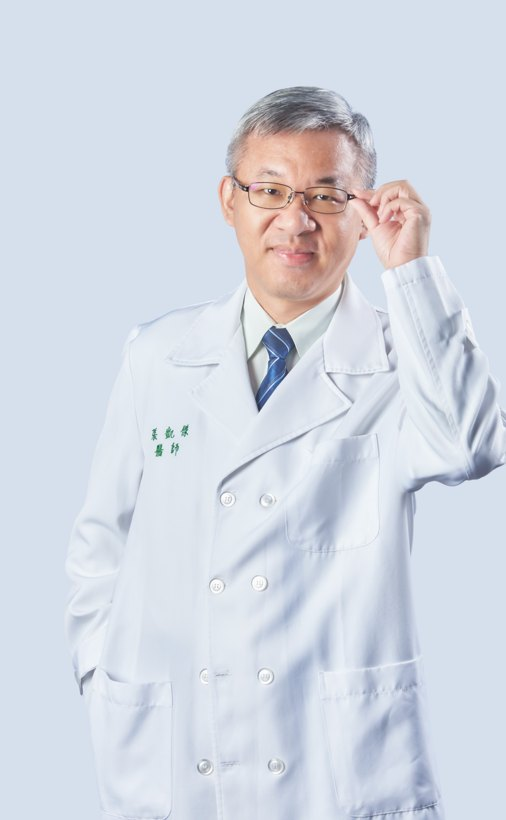

凱程診所位於新北市中和，提供三高慢性病照護、糖尿病健康促進、科學體重管理、戒菸與預防保健。由台大醫學系背景的張凱傑院長帶領，用心陪伴每一位家人。
凱程診所致力於基層醫療慢性病的預防與治療，積極參與各項慢性病照護計畫，並從事肥胖諮詢與戒菸等行為治療門診，以實證醫療陪伴社區民眾守護健康。
糖尿病共照網 ・ 氣喘共照網 ・ 初期慢性腎臟病共照網 ・ B/C 型肝炎追蹤共照網 ・ 新北市憂鬱症共照網
體重管理新選擇——以腸泌素（GLP-1／GIP）為核心，減脂、保肌、護代謝。院長受 ETtoday、中央社、聯合報等多家媒體專訪分享專業見解。

家庭醫學專科醫師 ・ 糖尿病合格衛教師認證（CDE）
基層醫療慢性病的預防與治療 ・ 肥胖諮詢與戒菸治療